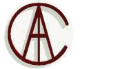

Institutional and scientific collaborations
-
Trismegistos: An interdisciplinary portal of papirology and epigraphical resources (Leuven)
-
Digital Edition and Translation of the Coptic-Sahidic Old Testament (Göttingen)
-
Cobb Institute of Archaeology. College of Arts & Sciences, Mississippi State University
-
Polish Centre of Mediterranean Archaeology of the University of Warsaw (PCMA) (Warsaw, Poland)